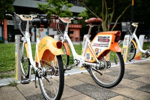

| 電動公車|公共自行車|BRT | |
| 電動公車 | |
嘉義市公車起源於嘉義客運前身之一的嘉義地方振興協會，由嘉義市役所創辦，初營公園、南門、北社尾三線，後併入嘉義乘合自動車株式會社，於二戰後改稱嘉義汽車客運股份有限公司。1949年，嘉義市政府所屬嘉義市營公共汽車管理處以2輛車經營1條循環路線，由今吳鳳北路、民權路口的圓環處出發，經南新、過溝、新埤、太保、後潭、水上，最終返回起點（當時太保、水上皆為嘉義市範圍）。1950年嘉義市廢除，市區公車隨之停辦。1951年復於嘉義縣內設嘉義市（縣轄市），1953年2月由嘉義縣政府恢復經營嘉義市公車，初期未正式訂名，歸嘉義縣政府建設課所管，直至同年9月底合併嘉合汽車股份有限公司（係由嘉義縣各農會籌資組成），正式成立嘉義縣公共汽車管理處除經營嘉義市公車外，亦經營嘉義縣境公路汽車客運業、遊覽車客運業。1982年嘉義市恢復為省轄市後，嘉義市公車仍由嘉義縣公共汽車管理處經營，期間亦歷經嘉義客運數個月接手，其後經營權再度移轉至縣公車。2020年6月1日，國光客運開始行駛嘉義市公車中山幹線（綠線），為歷來第一家非設籍嘉義市的嘉義市公車業者，並且也是第一家使用三門低底盤電動公車行駛嘉義市公車的業者，嘉義市公車至此邁入新的里程碑。
|
|
.jpg) |
|
| 公共自行車 | |
「YouBike微笑單車」為提供24H甲租乙還租賃服務的電子無人自動化管理公共自行車系統，以優質的營運服務、舒適好騎的自行車、方便註冊與使用之特點，鼓勵民眾改變出行習慣，使用大眾運輸系統，降低交通壅塞度，同時能夠環保節能，創造永續智慧交通環境。 |
|
|  | |
| BRT | |
BRT是Bus Rapid Transit的簡寫，中文稱為公車捷運系統，是發源於南美城市的一種新型大容量快速交通方式。它是利用現代巴士技術（如大容量、低地板、低成本的巴士和先進的光學導向巴士），在城市道路上設置巴士專用道或修建巴士專用路，再配合智能交通系統技術，採用軌道交通的運營管理模式（車站買票上車），實現輕軌交通服務水準的新型公共運輸方式。嘉義BRT多次流標，來不及建置，最後由嘉義客運公司得標，經營BRT路線。初期，購入大量台北公車加裝了車內到站播報系統，及加設大型行李置物台。在中央地方的全力趕工之下，嘉義BRT的專用道、車站等設施於2008年1月31完工啟用，專屬的巴士，並未一次到齊，而是分三年陸續補齊，預計2009年底，全線汰換完成，第一階段，目前已引入9輛低底盤的無障礙巴士。這些低底盤巴士為VOLVO，由唐榮公司負責打造，最大的特點為「低底盤」，由地面踏上公車，不必踩任何階梯，對行動不便的人士，是非常友善的，（現今捷運列車、高鐵列車也都採無階梯的設計）巴士的平面，也和公車月台機乎等高，讓上下車更安全。除了無階，它也是無障礙巴士，後門設有輪椅、嬰兒車專用的渡板，身障人士可由此渡板順利的進入公車，不必花費九牛二虎之力。嘉義BRT行駛路線為，嘉義縣朴子轉運站-朴子市四維路-168縣道-長庚紀念醫院-嘉義縣政府-高鐵嘉義站-太保~嘉義50米計畫道路- 嘉義市世賢路-自由路-友忠路-中興路-台鐵嘉義站後站-博愛路-嘉雄陸橋-新民路-垂楊路-啟明路-嘉義公園。全程營運里程計29.3公里， 其中主線(高鐵嘉義站-台鐵嘉義站後站)15.4公里、嘉義市區銜接線4.3公里、嘉義縣區銜接線9.6公里。沿途停靠18處站位，依序分別為：嘉義縣朴子轉運站、東石國中站、大槺榔站、長庚醫院站、縣政府站、東勢寮站、崙仔頂站、高鐵嘉義站、嘉義交流道東站、大溪厝站、世賢北港站、 世賢八德站、自由友愛站、台鐵嘉義站後站、三越遠東站、文化路口站、民族停車場站、嘉義公園站等。 |
|
.jpg) |
|